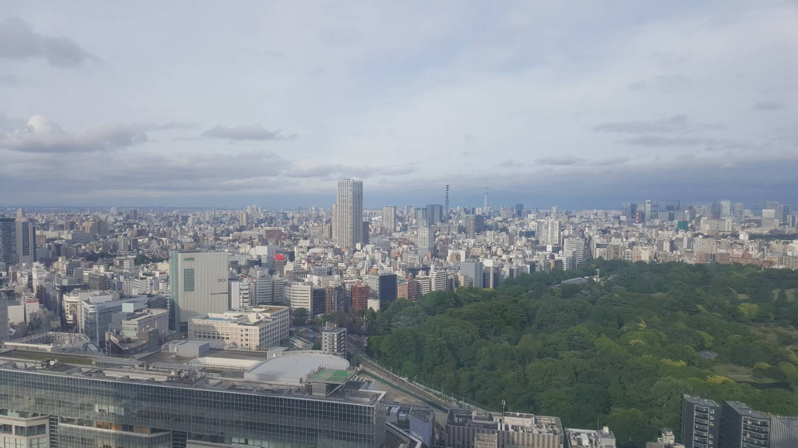

Hello everyone! So during our recent trip to Tokyo this year, we were looking for a hotel to stay in which met the following criteria (i) near the train station! This was very important to me as for a tourist the accessibility of a hotel is so important especially when the taxis are expensive. (ii) views haha the husband wanted a hotel with a nice view. this meant no windowless hotel rooms (yes, hotels in Tokyo have rooms with no windows which feels kinda claustrophobic to me). (iii) A budget of below $200 per night We went through a few hotels and finally settled on Odakyu Century Southern Tower. For this room, Expedia was the one which gave us the best rate! The link to the Expedia page is here. It met all the criteria which we set! (i) It was literally a 5min walk to the Shinjuku station and that was sooo wonderful cos Shinkuju is like an interchange for the different train lines which made staying there super convenient for us! Also, when walking to the train station you get to walk by a Starbucks which serves delicious coffee. More on my coffee adventures here. Anyway i digress. Yes so super convenient, we could literally see the train tracks from our hotel room. (ii) VIEWS. OK the husband is big on this one. And for this hotel, the lobby is on the 20th floor and the hotel rooms are from the 22nd to 35th floor. Here’s a picture of the view!
Day view~ (taken by the Husband)
Night view~ (also taken by the Husband) I think our room was on the 31st floor hoho! (iii) We booked on Expedia for about $180 plus per night 🙂 A few quick notes about the hotel 1// The room was big enough for us both to open our luggage at the same time and it was spacious enough to have a lounger. Space is something really important when booking a Tokyo Hotel. In some places, you can’t open all your luggages at once you need to tessellate and take turns which is really not fun by the 3rd or 4th night. Also, it looks exactly like the pictures on the website.
The interior of Blue Bottle Coffee Picture credits: Expedia 2// The staff do not carry your luggage to the rooms for you. Maybe because they are like a business hotel or more budget kinda hotel given Japan’s hotel standards. While the staff are generally helpful they do not carry your stuff to the room for you and also, there is no room service from the hotel directly but they do leave some leaflets in teh room for pizza delivery and stuff. 3// There is an airport limousine stop for this hotel. For those that are looking to take the bus from and back to the airport, this hotel has a direct airport limousine stop! 4// Breakfast at the hotel is expensive so we didn’t try it but…. 5// There are plenty of good eating places around the hotel and its like literally a 2 min walk from Takashimaya at Shinjuku whose basement, 5th, 6th and some other floors that are completely filled with eating places. In general, it seems that the higher the floor, the more expensive the food. All in all, it was a good stay and we would definitely be more than happy to go back and stay there again 🙂